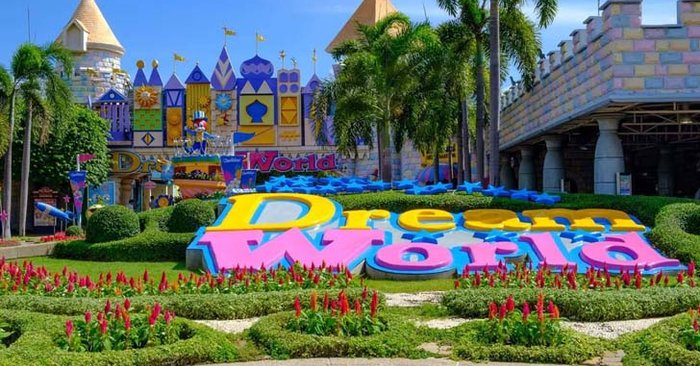

ยินดีต้อนรับสู่จังหวัดปทุมธานี

หนึ่งในพื้นที่ปริมณฑลของกรุงเทพมหานคร จังหวัดปทุมธานี ตั้งอยู่ทางทิศเหนือของกรุงเทพ
มีพื้นที่ลุ่มแม่น้ำเจ้าพระยา เป็นถิ่นฐานบ้านเมืองมานานกว่า 300 ปี ถือเป็นจังหวัดที่มีความเจริญรุ่งเรืองมาก
มีทั้งโรงงานอุตสาหกรรม ตลาดขายส่งขนาดใหญ่ และมหาวิทยาลัยหลายแห่ง นอกจากนี้ยังมีพื้นที่การเกษตรอยู่ทุกอำเภอ
ขึ้นชื่อในเรื่องของข้าวหอมปทุม หุงขึ้นหม้อ หอมนุ่มอร่อย จัดเป็นของดีเมืองปทุมเลยล่ะ นอกจากนี้
ปทุมธานียังเต็มไปด้วยสถานที่ท่องเที่ยวที่น่าสนใจหลายแห่ง ไหว้พระ เดินตลาด นั่งคาเฟ่ ชมพิพิธภัณฑ์
เที่ยวสวนสนุก กินก๋วยเตี๋ยวเรือ ช่วงวันหยุดว่าง ๆ ก็ขับรถมาเที่ยวปทุมธานีกันได้ เดินทางมาง่าย ใกล้ ๆ กรุงเทพ
เช็คอินชิลล์ จะพาคุณไปเที่ยวเมืองปทุม เที่ยวไม่ไกลกรุงเทพ ให้คุณได้ไปเที่ยว พักผ่อนหย่อนใจ
ตามสไตล์คนชอบเดินทาง เบื่อบ้าน
สถานที่แนะนำ

Dream World
สวนสนุกดรีมเวิลด์ สวนสนุกใกล้กรุงเทพฯ ย่านคลอง 3 โลกแห่งความสุขสนุกได้ทั้งครอบครัว
สนุกสนานไปกับเครื่องเล่นนานาชนิด อาทิ ทอร์นาโด, ไวกิ้งส์, เฮอริเคน, สกายโคสเจอร์, แกรนด์แคนยอน,
ซูเปอร์สแปลช, รถบั๊ม, ปราสาทผีสิง, เคเบิ้ลคาร์ เป็นต้น สัมผัสบรรยากาศหิมะที่เมืองหิมะ ตื่นตาตื่นใจไปกับ
4D แอดเวนเจอร์, ฮอลีวู้ด แอคชั่น และเอเลี่ยน เด็กๆ ไม่ต้องห่วง
เพราะที่นี่เค้ามีเครื่องเล่นสำหรับเด็กบริการ ไม่ว่าจะเป็นปลาบิน หนูลมกรด เรืออินเดียนแดง รถด่วนอวกาศ
และอีกมากมาย ภายในมีจุดถ่ายรูปเยอะมาก สามารถแวะได้ตลอดทาง อีกทั้งยังมีร้านค้า ร้านอาหาร
และร้านจำหน่ายของที่ระลึกคอยให้บริการ ทำให้สามารถสนุกสนานอยู่ที่นี่ได้ทั้งวัน

พิพิธภัณฑ์วิทยาศาสตร์แห่งชาติ คลองห้า
เชื่อว่าหลาย ๆ คนคงจะเคยมากันแล้วล่ะ สำหรับพิพิธภัณฑ์วิทยาศาสตร์แห่งชาติ คลองห้า
หรือที่เราเรียกสั้น ๆ กันว่า ตึกลูกเต๋า ประกอบไปด้วยพิพิธภัณฑ์ 4 แห่ง คือ พิพิธภัณฑ์วิทยาศาสตร์,
พิพิธภัณฑ์ธรรมชาติวิทยา, พิพิธภัณฑ์เทคโนโลยีสารสนเทศ และพิพิธภัณฑ์พระรามเก้า
ดำเนินงานโดยกระทรวงการอุดมศึกษา วิทยาศาสตร์ วิจัยและนวัตกรรม เพื่อให้ผู้ที่สนใจ
ได้เข้ามาศึกษาหาความรู้ทางด้านวิทยาศาสตร์ การกำเนิดโลก การกำเนิดสิ่งมีชีวิต เทคโนโลยีสารสนเทศ
และอื่น ๆ ภายในมีนิทรรศการ แบบจำลอง, หุ่นจำลอง, การแสดงวิทยาศาสตร์, โดมดูดาว,ท้องฟ้าจำลอง, ห้องทดลอง
และอีกมากมาย เด็กยุค 90’s ต้องเคยมากันทุกคนแน่นอน เพราะทางโรงเรียนจะจัดให้มาทัศนศึกษากันเป็นประจำ
แต่ถ้าได้มาเที่ยวชมอีกครั้งก็จะดีมากเลย หวนนึกถึงวันเก่า ๆ ที่มากับเพื่อนฝูง
หรือหากใครยังไม่เคยมาล่ะก็ ต้องลองมาเที่ยวชมดู จะได้ความสนุกสนาน บวกกับรับความรู้ไปแบบเต็ม ๆ

ดงตาลสามโคก
สัมผัสวิถีชนบท ท่ามกลางทุ่งนาผืนใหญ่ ที่ดงตาลสามโคก แหล่งท่องเที่ยวทางธรรมชาติในอำเภอสามโคก
ถือเป็นจุดวิวที่มีความสวยงามมาก ภาพที่เห็นเบื้องหน้าคือ ทุ่งนาสีเขียวขจี ต้นตาลสูงเรียงราย
บวกกับท้องฟ้า แนะนำให้มาถ่ายรูปช่วงเช้า พระอาทิตย์ขึ้น หรือช่วงเย็น พระอาทิตย์ตกดิน ได้รูปสวย ๆ
กลับไปแน่นอน เพราะท้องฟ้าจะเป็นสีเหลืองส้ม ซึ่งในแต่ละช่วงเดือน นาข้าวก็จะสลับกันไป
ขึ้นอยู่กับฤดูข้าว เป็นผืนนาเปล่าบ้าง ผืนนาสีเขียว ผืนนาสีเหลือง (ออกรวง) และผืนนาเก็บเกี่ยว
ใกล้ ๆ มี The Aileen Cafe คาเฟ่น่ารักริมนา สะพานไม้ทอดยาว เดินเล่นชมวิวได้ มีมุมถ่ายรูปเยอะ
สามารถแวะไปนั่งจิบกาแฟ ทานขนมกันได้ บรรยากาศดีสุด ๆ